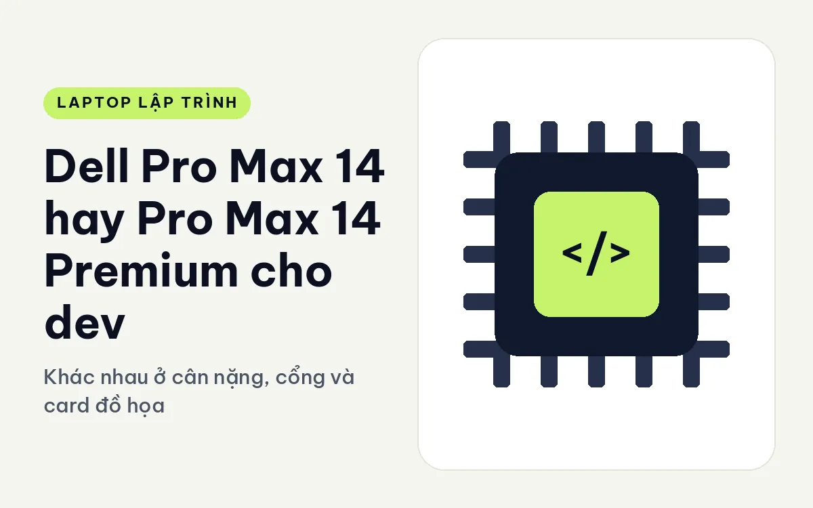
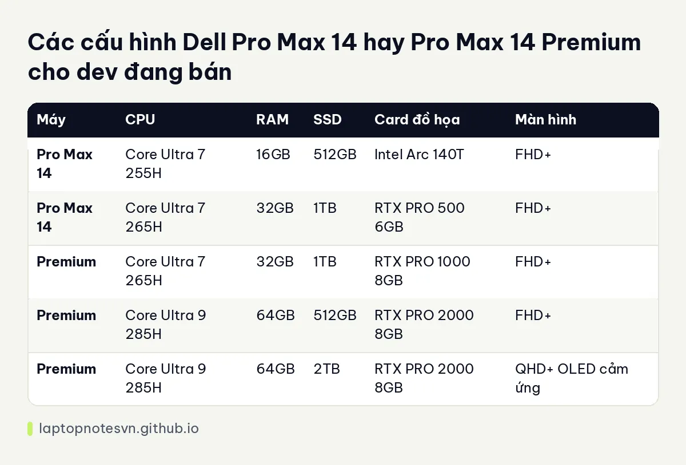

Dell Pro Max 14 hay Pro Max 14 Premium cho dev - Khác nhau ở cân nặng, cổng và card đồ họa

Dell đặt hai máy trạm 14 inch cạnh nhau trong cùng dòng Pro Max, và tên gọi dễ làm người mua nghĩ chúng chỉ khác nhau chữ "Premium". Thực tế hai máy có thân vỏ, cổng và cách nâng cấp khác nhau khá rõ. Nếu bạn là dev cần máy 14 inch có card rời để chạy thử mô hình hay dựng đồ họa, đọc kỹ phần dưới trước khi chọn.
Máy thứ nhất là Dell Pro Max 14 MC14250, bản phổ thông của dòng.
Máy thứ hai là Dell Pro Max 14 Premium MA14250, bản cao cấp hơn với vỏ gọn hơn.
Dell Pro Max 14 và Pro Max 14 Premium khác nhau ở vỏ máy
Pro Max 14 nặng khởi điểm 1,83 kg, dày từ 14,79 đến 24,65 mm. Pro Max 14 Premium nhẹ hơn rõ: 1,61 kg, kích thước 310,6 x 212,46 mm. Chênh khoảng 220 gam nghe nhỏ, nhưng nếu bạn mang máy đi mỗi ngày thì cảm giác trên vai khác hẳn sau vài tuần.
Cổng kết nối là chỗ hai máy rẽ hướng. Pro Max 14 có 2 cổng Thunderbolt 4, HDMI 2.1 và RJ45 tốc độ 10Gbps, tức là cắm dây mạng nhanh được ngay. Premium có 2 cổng Thunderbolt 5 cộng 2 cổng Thunderbolt 4 cùng HDMI 2.1. Thunderbolt 5 cho băng thông lớn hơn nên hợp người cắm nhiều màn hình ngoài hoặc ổ NVMe ngoài. Còn nếu công việc của bạn hay cần cắm dây LAN, thì máy thường tiện hơn vì có sẵn RJ45.
Pin cả hai đều 72Wh theo dữ liệu hiện có. Hai máy cùng dung lượng pin nhưng Premium nhẹ hơn nên đi chuyển tiện hơn.
CPU, RAM và SSD của từng bản
| Máy | CPU | RAM | SSD | Card đồ họa | Màn hình |
|---|---|---|---|---|---|
| Pro Max 14 | Core Ultra 7 255H | 16GB | 512GB | Intel Arc 140T | FHD+ |
| Pro Max 14 | Core Ultra 7 265H | 32GB | 1TB | RTX PRO 500 6GB | FHD+ |
| Premium | Core Ultra 7 265H | 32GB | 1TB | RTX PRO 1000 8GB | FHD+ |
| Premium | Core Ultra 9 285H | 64GB | 512GB | RTX PRO 2000 8GB | FHD+ |
| Premium | Core Ultra 9 285H | 64GB | 2TB | RTX PRO 2000 8GB | QHD+ OLED cảm ứng |
Bảng cho thấy khoảng cách ở GPU. Máy thường dừng ở RTX PRO 500 với 6GB VRAM, còn Premium bắt đầu từ RTX PRO 1000 và lên RTX PRO 2000 8GB. Bộ nhớ video 6GB khá chật khi chạy mô hình ngôn ngữ cục bộ, trong khi 8GB mở thêm vài lựa chọn mô hình nhỏ. Cả hai đều không phải máy để huấn luyện mô hình lớn, nhưng đủ để thử nghiệm, tinh chỉnh nhẹ và chạy suy luận.

RAM của hai máy đều dùng mô-đun LPCAMM2, hỗ trợ từ 16GB đến 64GB theo mô tả. Bản Premium có tới 64GB ngay từ cấu hình đang bán, điều mà máy thường không có. Chuyện nên cần bao nhiêu RAM được bàn kỹ ở bài lập trình viên cần bao nhiêu RAM.
Chia theo kiểu việc lập trình
- Web và backend thông thường: bản Core Ultra 7 255H với 16GB của máy thường đã đủ, nhưng bạn đang trả tiền cho dòng workstation mà không dùng đến thế mạnh của nó.
- Chạy Docker nhiều service: nên chọn từ 32GB trở lên, cả hai máy đều có bản này.
- Thử mô hình AI cục bộ: Premium với RTX PRO 2000 8GB hợp hơn vì có VRAM rộng hơn.
- Làm đồ họa, dựng cảnh 3D kết hợp code: bản Premium màn QHD+ OLED cảm ứng đáng cân nhắc, vì màu sắc là thứ bạn cần nhìn đúng.
- Dev mang máy đi ngày nào cũng đi: Premium nhẹ hơn nên đỡ mệt.
Những điều dev hay bỏ sót khi mua máy trạm 14 inch
Máy trạm nhỏ có một nghịch lý: khung 14 inch nhét được card rời, nhưng khả năng tản nhiệt bị giới hạn bởi kích thước. Khi bạn chạy build nặng hoặc suy luận mô hình liên tục, quạt sẽ lên và xung nhịp có thể giảm bớt để giữ nhiệt. Đó là lý do khoảng cách giữa card RTX PRO 500 và RTX PRO 2000 trên giấy không phải lúc nào cũng thể hiện đủ trong công việc dài hơi. Nếu tải của bạn là những đợt ngắn vài phút, cả hai ổn. Nếu là những đợt kéo dài hàng giờ, hãy ưu tiên máy nào có cấu hình card cao hơn một bậc so với nhu cầu tối thiểu của bạn.
Một điều khác là bộ sạc. Máy trạm thường đi kèm bộ sạc công suất lớn hơn laptop văn phòng, và bạn sẽ muốn mang theo nó. Hãy tính cả trọng lượng củ sạc khi cân nhắc chuyện 220 gam chênh nhau giữa hai máy.
Cuối cùng là hệ điều hành. Nhiều dev thích dùng Linux trên máy trạm, và dòng Pro Max nằm trong nhóm máy có thể chạy được. Trước khi mua, hãy kiểm tra xem card RTX PRO có driver ổn trên bản phân phối mà bạn dùng.
Chọn Dell Pro Max 14 hay Pro Max 14 Premium
Chọn Pro Max 14 nếu bạn cần cổng RJ45 10Gbps, thích cấu hình tầm trung và không đặt nặng chuyện VRAM. Phân tích riêng cho máy này nằm ở trang Pro Max 14 cho lập trình.
Chọn Pro Max 14 Premium nếu bạn cần card RTX PRO từ 1000 trở lên, muốn 64GB RAM, màn OLED và cổng Thunderbolt 5. Nó nhẹ hơn máy thường, và đó là lý do chính để chọn nó khi bạn thực sự mang máy đi lại hằng ngày.
Một gợi ý thực tế: nếu bạn chưa chắc mình có cần GPU rời hay không, hãy liệt kê những lần trong sáu tháng qua mà máy hiện tại bị nghẽn vì thiếu card. Không có lần nào, thì cả hai đều thừa. Có từ hai lần trở lên, hãy chọn Premium.
Đăng ngày 09/11/2026